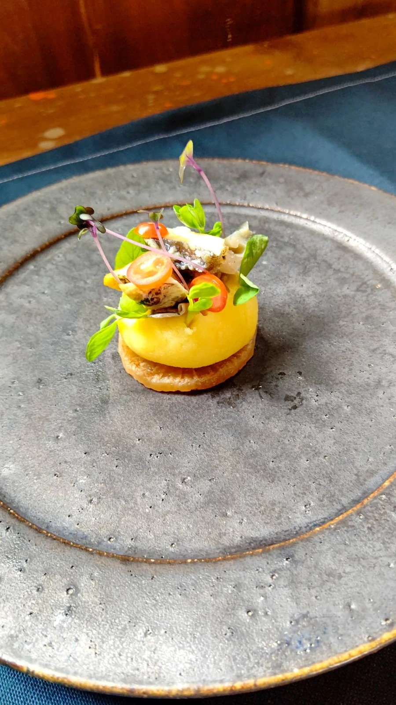
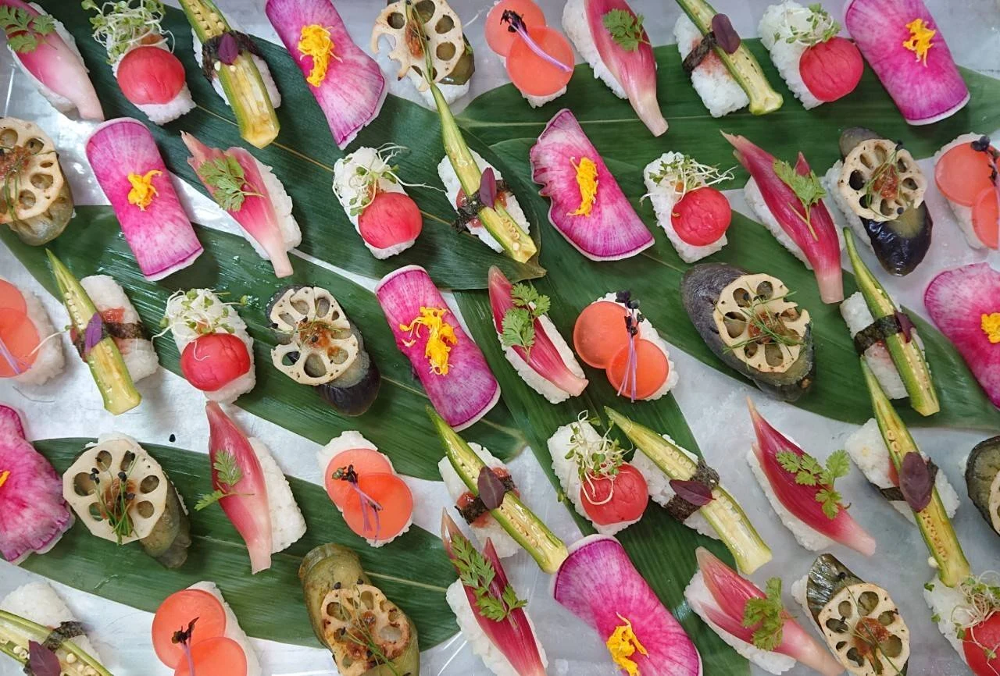

料理人であり、
人と人をつなぐ人。
千葉・茂原のレストランから、全国のさまざまな食卓へ。OTTOのオーナーシェフ・君塚博幸が届けたいのは、料理だけではありません。人が集まり、話し、つながる時間。その中心に、料理人として立ち続けています。

41歳からの、
新しい食卓。
40歳まで、会社に属する料理人として歩んできた君塚。ホテルでは料理人と総支配人を兼ね、料理をつくることと、その先にあるお客様の時間に向き合ってきました。
41歳で独立し、OTTOへ。立場が変わっても大切にしているのは、目の前にいる人のために料理をすること。これまでの経験が、レストランとケータリング、ふたつの場所でのもてなしにつながっています。

「8」を横にすると、
つながりは無限に。
OTTOは、イタリア語で「8」。横にすれば、無限を表す「∞」になります。その交わるところに自分が立ち、人と人をつないでいく。店名には、そんな君塚の想いが込められています。
人とのつながりを大切にする姿勢を、君塚は「究極のお節介」と表現します。カウンターを中心としたレストランでも、出向いた先のケータリングでも。料理を囲む人たちとの近さを、大切にしています。

食べることを、
次の世代へ。
料理を届ける場所は、レストランやパーティー会場だけではありません。君塚は学校の特別講師として、食べることの大切さや、食の情報をきちんと見極めることも伝えてきました。
現在は茂原市の小・中・高校を訪れ、出張職場体験にも取り組んでいます。食をきっかけに人と関わる。その想いは、これから料理や仕事に出会う子どもたちへも広がっています。
どこへ出向いても、
お客様のそばに。
ケータリングを、千葉から全国へ。活動の場を広げながらも、レストランは続けていきたいと君塚は考えています。食べてもらい、感想を聞き、次のひと皿へつなげる。そのやりとりこそが、OTTOの原点だからです。
学校での授業・出張職場体験のご相談も、お電話で承ります。